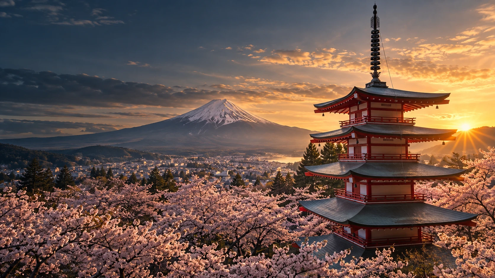
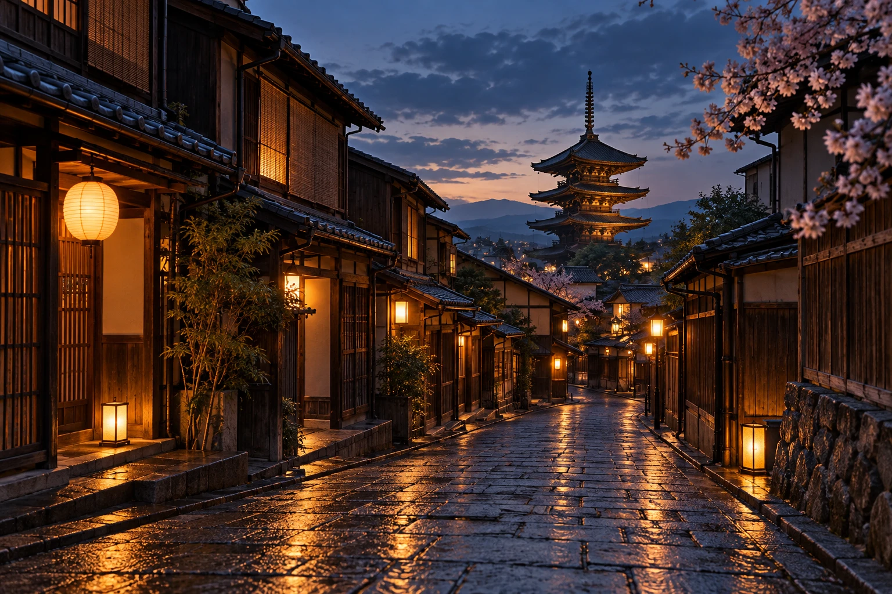

Mountain mornings
Fuji foothills, lakeside walks and a slower start to the day.

A journey beyond the ordinary
A world of quiet wonder.
Mountain mornings. Lantern-lit lanes. The beauty of taking your time. Discover a country where every turn invites you to look a little closer.
Explore JapanOne country. Many ways to wander.
These sample journeys are starting points. Choose a pace, follow a curiosity, and make space for the moments in between.
Fuji foothills, lakeside walks and a slower start to the day.
Old Kyoto lanes, quiet courtyards and time to linger.
A considered route shaped around the things you love.

Listen to the street settle. Follow the lantern glow. Find beauty in a different kind of evening.
Plan your journey ↗THE JAPAN TRAILS APPROACH
We are a fictional travel studio with a simple idea: a journey feels richer when there is room to notice. This concept brings together evocative places, thoughtful pacing and an invitation to explore.
Share your interests and the kind of journey you have in mind.
Plan your journey Opens your email app. No booking or payment is taken here.